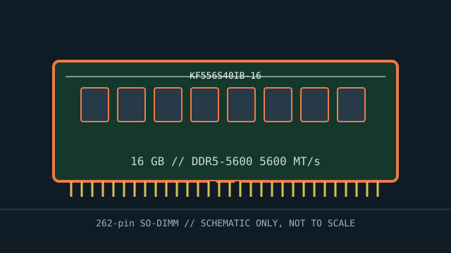

[ MANUFACTURER MODEL // MEMORY / RAM ]
Kingston FURY KF556S40IB-16
A specific DDR5 laptop memory module identified by manufacturer part number KF556S40IB-16. The stated 16 GB capacity, speed, latency, nominal voltage, and module format describe this SKU; check the specimen label and SPD for revision-specific details.

EXACT SKU: Kingston FURY KF556S40IB-16. Specifications identify the listed product family. Confirm the printed part number, revision/date code, SPD tables, and module markings on the specimen before service; memory vendors may change component sourcing across revisions.
Model specifications
| Manufacturer / SKU | Kingston FURY KF556S40IB-16 |
|---|---|
| Module class | Unbuffered, non-ECC notebook module; 262-pin SO-DIMM |
| Capacity / data rate | 16 GB; DDR5-5600 (5600 MT/s) |
| CAS latency / voltage | CL40-40-40; nominal module voltage 1.1 V. Profile or host selection may alter the operating data rate/timings. |
| Organization / ECC status | Non-ECC unbuffered module with DDR5 on-die ECC; this does not provide host-level ECC reporting. DDR5 on-die ECC is not equivalent to host-visible ECC. |
| Form factor / generation | 262-pin SO-DIMM, DDR5; DDR generation notches and signaling are incompatible across generations. |
| Host platform limitations | 5600 MT/s may require a supported XMP 3.0 profile; otherwise the host can select a lower JEDEC rate. Verify DDR5 capacity/rank support and firmware compatibility. Requires a DDR5 SO-DIMM slot and a host memory controller/firmware supporting 16 GB per module and its device organization. 5600 MT/s may require a supported XMP 3.0 profile; otherwise the host can select a lower JEDEC rate. Verify DDR5 capacity/rank support and firmware compatibility. |
Compatibility & service notes
- Requires a DDR5 SO-DIMM slot and a host memory controller/firmware supporting 16 GB per module and its device organization. 5600 MT/s may require a supported XMP 3.0 profile; otherwise the host can select a lower JEDEC rate. Verify DDR5 capacity/rank support and firmware compatibility.
- Not compatible with a socket for another DDR generation: DDR5 pin count and keying do not make it interchangeable with DDR3, DDR4, or DDR5 modules of another generation.
- DDR5 on-die ECC is not equivalent to host-visible ECC. This module is unbuffered and is not a registered or load-reduced server DIMM.
- Follow the notebook service manual for power-down, battery isolation, and ESD procedures. Handle by the edges, align the notch, and never force the module into the slot.
- Before ordering a second module, confirm the exact platform maximum per slot, permitted ranks/densities, supported channel configuration, BIOS version, and qualified-memory guidance; mixed modules may operate at the slowest common settings or fail memory training.
Preservation record
Photograph the complete label and notch, preserve manufacturer part number and revision, retain an SPD dump when available, and record the host model, CPU, BIOS version, slot/channel position, reported operating data rate, and memory-test result.
Manufacturer & standards sources
- Kingston exact SKU datasheetManufacturer reference for this exact part number or its product specification; use it to confirm the marketed module configuration.
- JEDEC JESD79-5 — DDR5 SDRAMGeneration-level electrical and signaling context. JEDEC defines the DDR interface, not whether a particular laptop supports this capacity, profile, rank, or density.
Use the laptop vendor’s service manual and CPU memory-controller documentation for final compatibility. Product revisions and SPD tables should be checked on the physical specimen.